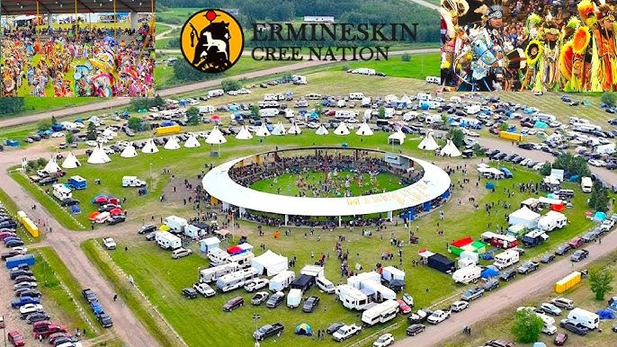
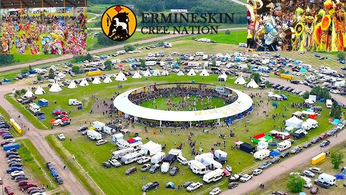

Economy of Samson Cree Nation
Samson Cree Nation’s economy is shaped by community-run programs, local businesses, partnerships, and land-based industries that support long-term growth and self-determination. The Nation operates several departments and organizations that provide employment in fields such as education, health, daycare, public works, housing, cultural programs, and administration. These services are essential to daily community life and create stable job opportunities for many members.
Local businesses include gas stations, convenience stores, construction companies, land services, farming operations, and community-owned enterprises. Many members also create economic opportunities through art, beadwork, crafts, clothing designs, and cultural performances. The Nation continues to explore economic development initiatives that focus on sustainability, cultural respect, and future growth.
Samson Cree Nation places strong importance on economic sovereignty — the ability to create and control its own financial future. Through careful planning, partnerships, and community leadership, the Nation continues to expand opportunities that benefit families and future generations. The goal is always to support wellness, independence, and prosperity while staying aligned with Cree values and traditions.
 
